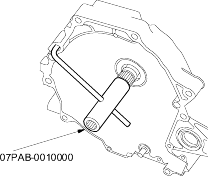
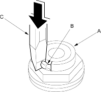
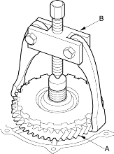

Mainshaft holder set, 07PAB-0010000
NOTE: Refer to the Exploded View as needed during the following procedure.
- Remove the transmission range switch cover.
- Remove the transmission range switch harness clamps, then remove the transmission range switch.
- Remove the 12 bolts securing the end cover, then remove the end cover.
- Slip the special tool onto the mainshaft.

- Engage the park pawl with the park gear.
- Cut the lock tabs (A) of the mainshaft and countershaft locknuts (B) using a chisel (C). Then remove the locknuts and conical spring washers from both shafts.
NOTE:
- Mainshaft and countershaft locknuts have left-hand threads.
- Clean the old countershaft locknut; it is used to install the press fit park gear on the countershaft.
- Keep all of the chiselled particles out of the transmission.

- Remove the special tool from the mainshaft.
- Remove the 1st clutch and mainshaft 1st gear as an assembly and remove the 1st gear collar.
- Remove the park pawl, park pawl spring, park pawl shaft and stop shaft.
- Remove the park lever from the control shaft.
- Remove the park gear, one-way clutch and countershaft 1st gear assembly (A) using a universal 2 jaw puller (B).

- Remove the needle bearing and countershaft 1st gear collar.
- Remove the ATF cooler lines.
- Remove the A/T clutch pressure control solenoid valves A and B, if necessary.